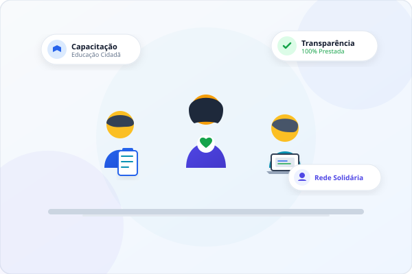

Missão
Promover a emancipação cidadã e o apoio direto a comunidades em situação de vulnerabilidade.
Transparência e Ação Social
O Instituto Conexão Solidária mobiliza apoio comunitário, capacitação cidadã e assistência direta para famílias em vulnerabilidade.
Seja Voluntário Conheça os Projetos

Nossos Fundamentos
Promover a emancipação cidadã e o apoio direto a comunidades em situação de vulnerabilidade.
Ser referência em transparência orçamentária e impacto social duradouro no terceiro setor.
Ética inegociável, prestação de contas aberta, respeito à dignidade humana e compromisso coletivo.